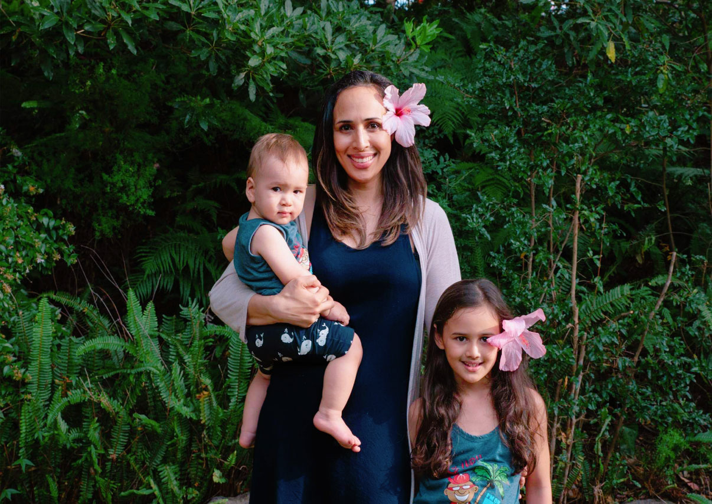
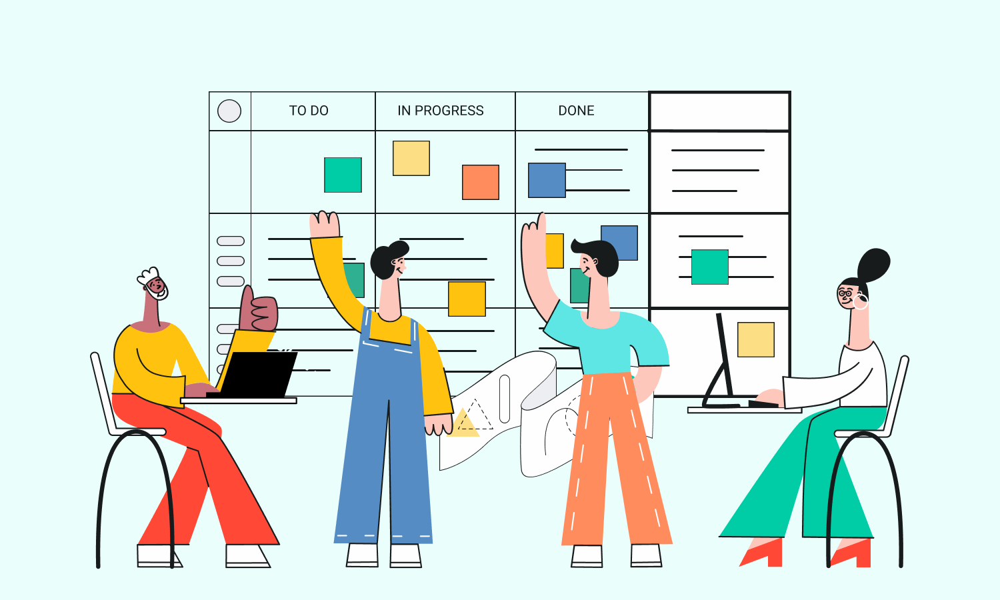

Bula Vinaka! Na yacaqu o Philadelphia. Au gone ni Nadroga. Na noqu koro o Komave. Na noqu koro ni vasu o Lepea, Samoa. Na noqu matanitu o Burebasaga. Na noqu yasana o Nadroga. Na noqu tikina o Komave. Na noqu yavusa o Komave. Na noqu mataqali o Waqanitabua. Na noqu tokatoka o Narogi.
I was born in Suva, on the beautiful island of Viti Levu in Fiji. I was raised and educated in Tāmaki Makaurau, Aoteroa (Auckland, New Zealand), Eora and Darug (Sydney and Western Sydney, Australia).
I'm a mother of two caring, clever, beautiful and funny children. They inspire me to be the best version of myself and that means putting my health and well being first because you can't pour from an empty cup.

Currently, I'm living in Serbia with my children and I'm very fortunate to have seen much of the world, more recently travelling around Europe.
My interests include cosmetic formulation (making my own skin care like lotions, lip balms, cleansers etc), playing the piano and a little website design. This website was the first project I worked on in the Javascript/HTML/CSS Bootcamp I completed.
Recently I decided to pivot into tech and become a Scrum Master after 15+ years of working in marketing/business development and running my own ecommerce business.
I'm open to working remotely for companies in the EMEA region.
As a Scrum Master I facilitate events and foster communication to help people achieve their goals. It's my aim to protect people from management dysfunction, overcommitting, and distractions. It's my goal to remove the impediments (especially the unspoken & unseen) that prevent my teammates from completing their work and providing value successfully.

One of my major responsibilities is ensuring that teams embrace agile values and principles and follow the processes and practices that the team agrees to. It is my goal to coach self-organizing cross-functional teams to perform at their best, and it's my mission to ensure psychologically safety for my team to see us all succeed together. I’m here to make life easier.
I like to write about what I'm learning, doing and interested in. You can check out my Scrum Master Lab Newsletter on Linkedin for my latest articles on scrum, agile, diversity, women in tech, remote work and more.
You can connect with me on Linkedin and Twitter or fill out the form to send me a message & I'll get back to you: